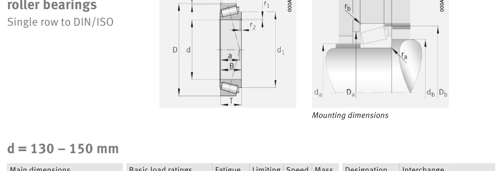

Original catalogue drawing - FAG Schaeffler HR 1, page 606

Scanned from the manufacturer catalogue page listing this part number. All part numbers printed on that table share the same drawing.
Scale cross-section
Blue = inner / outer ring, yellow = rolling element. Drawn to scale from this part's own
dimensions for selection reference only - not a manufacturing or assembly drawing.
Dimension table (mm / inch)
Symbol
Dimension
mm
inch
d
Bore diameter
140
5.5118
D
Outside diameter
250
9.8425
B
Inner-ring / bearing width
68
2.6772
T
Overall assembly width
71.75
2.8248
C
Cup / outer-ring width
58
2.2835
Notes
Weights are given in kg. Load ratings are shown in both the original catalogue units and the converted value (1 N = 0.2248 lbf). Data is provided for selection reference only - confirm against the latest official catalogue before ordering.
Main dimensions
Bore d (mm)
140
Outside dia. D (mm)
250
Width B (mm)
68
Overall width T (mm)
71.75
Cup width C (mm)
58
Inner-ring OD d1 (mm)
191.5
Load ratings & speeds
Basic dynamic load rating Cr (lbs)
170855
Basic static load rating Cor (lbs)
222561
Basic dynamic load rating Cr (N)
760000
Basic static load rating C0r (N)
990000
Basic dynamic axial rating Ca (N)
8
Fatigue limit load Cur (N)
137000
Factor e
0.43
Factor Y
1.38
Factor Y0
0.76
Limiting speed nG (rpm)
2,950
Reference speed nB (rpm)
1,760
Effective load centre a (mm)
60
Weight
Weight (kg)
14.5
Mounting dimensions (fillets / shoulders)
Chamfer r2 min (mm)
4
Shaft shoulder da (mm)
159
Shaft shoulder db (mm)
154
Housing shoulder Da (mm)
210
Housing shoulder Db (mm)
238
Housing fillet ra max (mm)
4
Fillet rb max (mm)
3
Bearing life (ISO 281 basic rating life)
C / P
Equivalent load P (N)
L10 (106 rev)
L10h at 900 rpm
4
190,000
102
1,881
6
126,667
392
7,268
8
95,000
1,024
18,963
10
76,000
2,154
39,897
15
50,667
8,323
154,138
Basic rating life per ISO 281: L10 = (C/P)10/3 with C = 760,000 N. Hours = L10 x 106 / (60n). Life-modification factors for lubrication, contamination and temperature (aISO) are not included.
Source & traceability
Brand
FAG
Source catalogue
FAG / Schaeffler Rolling Bearings HR 1
Catalogue page
p.606 (dimensions)
Load ratings in newtons, fatigue limit load Cur, limiting speed nG and reference speed nB.
Send us the quantity you need and we will come back with price and
lead time, normally within 24 hours. Equivalent parts from other brands can be quoted at the same time.